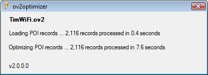

OV2 files are binary files used by TomTom navigation devices to store Points Of Interest (POIs). A POI is simply a location (latitude and longitude) that can be used as a destination, a waypoint along a route, or the source of a warning (e.g., for intersections with red-light cameras).
While fooling around with OV2 files on my TomTom GO 720 I discovered that the vast majority of POI editors and converters create OV2 files that can impair the performance of our TomTom devices. These files contain the POI information but they lack the internal indexing that allows the TomTom to scan through the file quickly.
So if "Show POI on map" is enabled (as it is by default when you add a new OV2 file to your device), or if you have enabled "Warn when near POI" for a POI category, the TomTom is forced to read every POI record in that OV2 file to see which POIs are nearby. If you have a lot of these "unindexed" custom POIs installed you may start to experience a noticeable lag or "choppiness" in the screen updates as you drive.
ov2optimizer is a free Windows application that creates OV2 files with the required indexing information (which TomTom calls "skipper records"). If you have downloaded third-party OV2 files, especially larger ones (e.g., WiFi, McDonalds, Starbucks, etc.) you may get faster and smoother screen updates after you run those OV2 files through ov2optimizer.
Note: You can also convert CSV files (e.g., POI Factory's "Red Light Camera" and "Speed Camera" files) to fully-indexed OV2 files.
Mac users: You can achieve similar results by using an online tool created by another developer, available here.